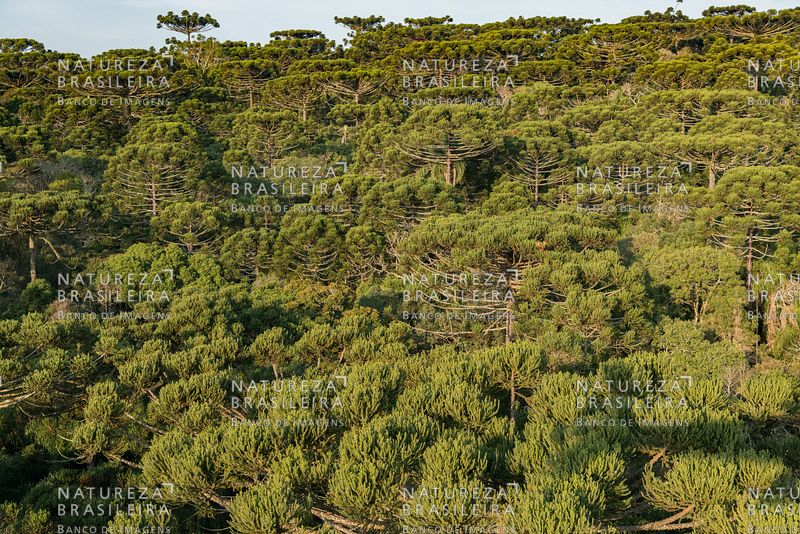
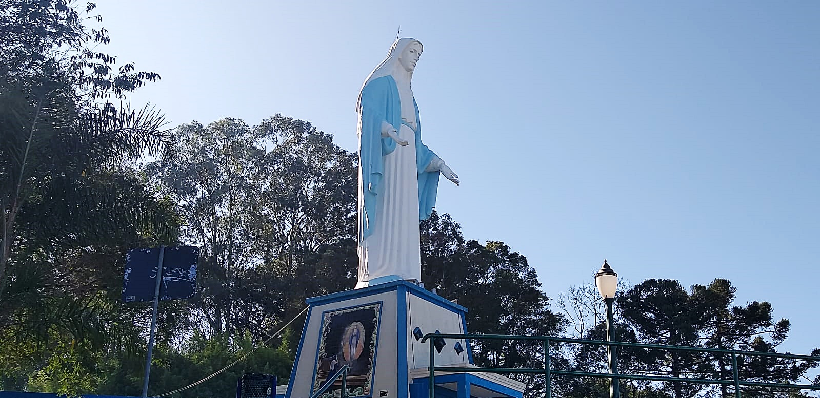
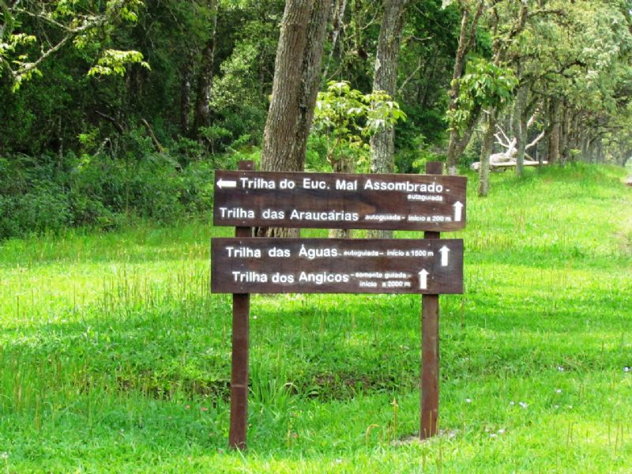

A mescla das diferentes culturas torna a cidade de Irati uma das mais interessantes do Sul do País. Surpreende por sua condição privilegiada, com densas florestas de araucária, clima temperado, rios caudalosos, cultura rica e diversificada e paisagens únicas. Irati está a cerca de 156 km de Curitiba, na região Turística Terra dos Pinheirais - Centro-Sul do Paraná. A população é formada por diferentes etnias, especialmente poloneses e ucranianos que buscam manter costumes e tradições de seus ascendentes, o que torna a cidade bastante agradável. A população estimada, segundo o IBGE, é de 60.357 habitantes. O município teve origem na Vila de Covalzinho, quando os trilhos da estrada de ferro São Paulo/Rio Grande do Sul passaram pelo local. Foi ali instalada a estação ferroviária que recebeu o nome de Iraty. O nome Covalzinho foi lentamente esquecido, ficando a vila conhecida apenas pelo nome da estação ferroviária. Irati vem do indígena tupi, e significa Rio de Mel. As terras onde se localiza pertenciam aos índios. O mel, daquela época até hoje, tem profunda força local histórica e cultural, além de significativa produção.
Praças, áreas verdes, e inúmeras cachoeiras na área rural compõem o cenário perfeito para quem busca tranquilidade nas horas de lazer.
O monumento a Nossa Senhora das Graças e as várias igrejas com suas arquiteturas singulares são um convite à espiritualidade.
Além de conhecer o Museu Casa Dei Nonni, os visitantes tem acesso a atrações como trilha ecológica e passeios de carroça.
